(De)projections of the FEP/FES
Projecting 2D FES to 1D FEP
A projection of a 2D Free energy surface towards a 1D free energy profile can be one of the following cases:
Projecting out one of the collective variables, e.g. going from 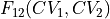 towards 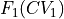
Projecting to a function of the original two collective variables, i.e. going from 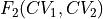 towards 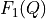 with 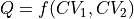
The first case is as easy as applying the project_cv1 or project_cv2 routine:
fep1 = fes.project_cv1()
#or
fep2 = fes.project_cv2()
The second case can be done by application of the project_function routine which requires the definition of the function in a similar fashion as was the case in transformations:
#define function
def function(cv1, cv2):
return 0.5*(cv2-cv1)**2
#define range of bins of new collective variable
qs = np.arange(..., ..., ...)
#apply projection
fep = fes.project_function(function, qs)
In case the function is simply the average 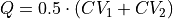 or the difference 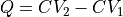, one can use the already implemented specific routines project_average and project_difference:
fep_avg = fes.project_average()
#or
fep_diff = fes.project_difference()
Deprojecting 1D FEP to 2D FES
To do a deprojection of a 1D FEP 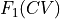 towards a 2D free energy surface  , knowledge of only is insufficient and additional information from the original simulation is required. Depending on the situation, multiple approaches to do this are possible. The first, most general, approach is based on Bayes rule
, knowledge of only is insufficient and additional information from the original simulation is required. Depending on the situation, multiple approaches to do this are possible. The first, most general, approach is based on Bayes rule
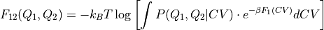
and, hence, involves construction of the conditional probability 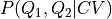. This property represents the probability that the system is in a state with a specific value of Q1 and Q2, given that the system was in a state with specific value of CV and can be extracted from the original simulation data using the ConditionalProbability1D2D class:
#initialize conditional probability
condprob = ConditionalProbability1D2D()
#initialize TrajectoryReaders to extract CV and Q1, Q2 values from trajectory files
cv_reader = ColVarReader([0])
q1_reader = ColVarReader([1])
q2_reader = ColVarReader([2])
#Read trajectory files and extract samples for conditional probability
for i in range(ntraj):
condprob.process_simulation(
[('COLVAR_%i.dat' %i, q1_reader), ('COLVAR_%i.dat' %i, q2_reader)],
[('COLVAR_%i.dat' %i, cv_reader)],
)
#Compute conditional probability in given bin ranges
bins_cv = np.arange(start, end, width)
bins_q1 = np.arange(start, end, width)
bins_q1 = np.arange(start, end, width)
condprob.finish([bins_q1,bins_q2], [bins_cv])
This conditional probability can be plotted using its plot routine. Finally, the 2D free energy surface can now be constructed from the 1D FEP and the conditional probability as follows:
fes = condprob.deproject(fep)
Note
In case we would like to deproject towards new CVs in which Q1 is just the original CV, i.e. 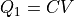, we can make some simplifications to the Bayes theory resulting in
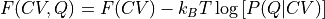
and use the ConditionalProbability1D1D class to implement this
#initialize conditional probability
condprob = ConditionalProbability1D1D()
#initialize TrajectoryReaders to extract CV and Q values from trajectory files
cv_reader = ColVarReader([0])
q_reader = ColVarReader([1])
#Read trajectory files and extract samples for conditional probability
for i in range(ntraj):
condprob.process_simulation(
[('COLVAR_%i.dat' %i, q_reader)],
[('COLVAR_%i.dat' %i, cv_reader)],
)
#Compute conditional probability in given bin ranges
bins_cv = np.arange(start, end, width)
bins_q = np.arange(start, end, width)
condprob.finish([bins_q], [bins_cv])
#construct deprojected 2D FES
fes = condprob.deproject(fep)
Finally, as a second alternative method to get the 2D FES in this specific situation, one could also have done a 2D WHAM using the original simulation data biased along one of these CVs as was described in SCENARIO 2 of constructing a 2D histogram from WHAM.